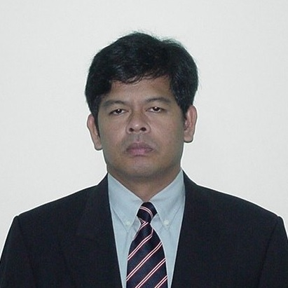

สารอธิการบดีมหาวิทยาลัยเทคโนโลยีราชมงคลพระนคร

มหาวิทยาลัยเทคโนโลยีราชมงคลพระนครตั้งปณิธานที่จะมุ่งมั่นความเป็นผู้นำการจัดการศึกษาด้านวิชาชีพด้วยความรู้ทางวิทยาศาสตร์และเทคโนโลยีเชิงบูรณาการ พัฒนากำลังคนให้มีคุณภาพ คู่คุณธรรม สู่มาตรฐานสากล ด้วยการคิดอย่างสร้างสรรค์และทำอย่างมืออาชีพ และมีเป้าหมายที่จะก้าวไปสู่ความเป็นมหาวิทยาลัยเทคโนโลยีแห่งโลกอาชีพ ดังวิสัยทัศน์ “มหาวิทยาลัยเทคโนโลยีชั้นนำด้านการผลิตบัณฑิตมืออาชีพ”
ตั้งแต่สถาปนามหาวิทยาลัยเทคโนโลยีราชมงคลพระนคร เมื่อ พ.ศ.2548 เป็นต้นมา มหาวิทยาลัยฯได้วางรากฐานการพัฒนาบุคลากร โดยส่งเสริมให้อาจารย์ นักวิจัย บุคลากรสายวิชาการ เจ้าหน้าที่และนักศึกษาทุกสาขาวิชาชีพได้ทำงานวิจัย และสิ่งประดิษฐ์ส่งเข้าร่วมงานประชุมวิชาการทั้งระดับชาติและนานาชาติมาอย่างต่อเนื่อง ทำให้มีการแลกเปลี่ยนเรียนรู้ การพัฒนาและขยายเครือข่ายผู้เชี่ยวชาญในแต่ละสาขาอาชีพอย่างมากมาย โดยมุ่งเน้นในการให้ร่วมมือกับภาคเอกชน ภาคอุตสาหกรรมด้านต่างๆ ในหลายรูปแบบเพื่อออกแบบหลักสูตรการเรียนการสอนให้ตรงตามความต้องการของตลาดแรงงานในปัจจุบัน โดยพัฒนาหลักสูตรให้มีความทันสมัย เพื่อให้ก้าวทันต่อความเจริญก้าวหน้าของเทคโนโลยีของโลกที่พัฒนาไปอย่างรวดเร็วและต่อเนื่อง
นับเป็นโอกาสที่ดีในปีนี้มหาวิทยาลัยเทคโนโลยีราชมงคลพระนคร ได้มีโอกาสร่วมมือกับและสถาบันมาตรวิทยาแห่งชาติ สมาคมวิชาการไฟฟ้า อิเล็กทรอนิกส์ คอมพิวเตอร์ โทรคมนาคมและสารสนเทศ (ECTI) ร่วมกันจัดการประชุมวิชาการงานวิจัยและพัฒนาเชิงประยุกต์ หรือ ECTI-CARD 2016 ซึ่งในปีนี้จัดขึ้นเป็นครั้งที่ 8 ภายใต้หัวข้อ “การประยุกต์ใช้เทคโนโลยีอย่างชาญฉลาดเพื่อตอบสนองภาคอุตสาหกรรมสมัยใหม่อย่างยั่งยืน” ณ โรงแรมหัวหินแกรนด์ โฮเทล แอนด์ พลาซ่า จังหวัดประจวบคีรีขันธ์ ระหว่างวันที่ 27-29 กรกฏาคม พ.ศ.2559 ดังนั้นจึงเป็นโอกาสที่ดีที่ทำให้เกิดการแลกเปลี่ยนความรู้ นวัตกรรม และงานวิจัยเชิงประยุกต์ระหว่างนักวิจัย อาจารย์ นักศึกษาในสถาบันการศึกษาชั้นนำทั่วประเทศกับภาคอุตสาหกรรมสมัยใหม่ ซึ่งจะก่อให้เกิดองค์ความรู้และนวัตกรรมใหม่ๆที่สามารถนำไปสู่การพัฒนาเศรษฐกิจและสังคมของประเทศไทยได้
ในนามของมหาวิทยาลัยเทคโนโลยีราชมงคลพระนคร ขอขอบคุณกรรมการในทุกหน่วยงานที่เกี่ยวข้องทุกท่านที่ทุ่มเทกำลังกายกำลังใจเพื่อให้การประชุมวิชาการงานวิจัยและพัฒนาเชิงประยุกต์ หรือ ECTI-CARD 2016 สามารถดำเนินการไปได้ตามวัตถุประสงค์ และสุดท้ายขออวยพรให้การประชุมวิชาการครั้งนี้สำเร็จลุล่วงไปได้ด้วยดีบรรลุผลสำเร็จดังเจตนารมณ์ที่มุ่งหวังไว้ทุกประการ และมีนวัตกรรม งานวิจัยเชิงประยุกต์ที่มีประโยชน์นำไปสู่การพัฒนาความเจริญก้าวหน้าทางวิชาการ การพัฒนาเศรษฐกิจและสังคมของประเทศไทยได้อย่างต่อเนื่องสืบไป

รองศาสตราจารย์ สุภัทรา โกไศยกานนท์
อธิการบดีมหาวิทยาลัยเทคโนโลยีราชมงคลพระนคร
สารจากนายกสมาคม ECTI

สมาคมวิชาการไฟฟ้า อิเล็กทรอนิกส์ คอมพิวเตอร์ โทรคมนาคม และสารสนเทศ (Electrical Engineering/ Electronics, Computer, Telecommunications, and Information Technology Association) ซึ่งเรียกย่อๆว่า ECTI Association หรือ สมาคมอีซีทีไอ จัดตั้งขึ้นโดยมีจุดประสงค์เพื่อส่งเสริมความก้าวหน้าด้านวิชาการในประเทศไทยในสาขาวิชาวิศวกรรมศาสตร์ และเทคโนโลยีด้านไฟฟ้า อิเล็กทรอนิกส์ คอมพิวเตอร์ โทรคมนาคมและสารสนเทศ และเป็นแหล่งรวมข้อมูลความรู้ของงานประชุมวิชาการต่างๆ ที่จัดขึ้นภายในประเทศให้สามารถค้นหาข้อมูลบทความในสาขาที่เกี่ยวข้องได้อย่างสะดวก และสามารถนำไปใช้ในการวิจัยต่อๆ ไปได้ โดยสมาคมฯได้จดทะเบียนเมื่อวันที่ 26 กรกฎาคม 2545 ในการจัดตั้งสมาคมฯ นั้น ตั้งใจว่าจะพยายามให้คล้ายกับ IEEE หรือ IEICE (ของประเทศญี่ปุ่น). กิจกรรมหลักๆจะมี การออกวารสารวิชาการ (ซึ่งมีสองฉบับ คือ ECTI Transactions on Electrical Engineering, Electronics and Communications, ECTI-EEC และ ECTI Transactions on Computers and Information Technology, ECTI-CIT) โดยตีพิมพ์บทความวิจัย และบทความประเมินเป็นภาษาอังกฤษ ดำเนินการจัดประชุมวิชาการระดับชาติ และระดับนานาชาติ การอบรมทางวิชาการ และการจัดบรรยายพิเศษ เป็นต้น
ตลอดระยะเวลา 15 ปีที่ผ่านมา สมาคมอีซีทีไอ ได้ดำเนินการจัดประชุมทางวิชาการทั้งในระดับ นานาชาติและระดับชาติ มาอย่างสม่ำเสมอ การประชุมทางวิชาการของสมาคมฯเองในระดับนานาชาตินั้น ชื่อ ECTI-CON จัดขึ้นครั้งแรก เมื่อปี พ.ศ. 2547 ส่วน ECTI-CARD เป็นการประชุมระดับชาติ ได้จัดขึ้นครั้งแรกเมื่อปี พ.ศ. 2552 ในแต่ละครั้งของการประชุม สถานที่จัดก็จะหมุนเวียนไปตามจังหวัดต่าง ๆ ทุกภูมิภาคของประเทศ
ECTI-CARD เป็นการประชุมทางวิชาการที่เน้นการวิจัยและพัฒนาเชิงประยุกต์ ในด้านต่าง ๆ โดยเฉพาะอย่างยิ่งในด้านเกษตรกรรม อุตสาหกรรม และการศึกษา อันส่งผลโดยตรงต่อการพัฒนาเศรษฐกิจและสังคมของประเทศไทย โดยผลงานที่นำเสนอจะได้รับการคัดกรองจากผู้ทรงคุณวุฒิอย่างเข้มข้น นอกจากนี้คณะกรรมการจัดการประชุมยังได้คัดเลือกบทความรับเชิญที่น่าสนใจอีกจำนวนหนี่งมานำเสนอในการประชุมอีกด้วย การประชุม ครั้งที่ 8 หรือ ECTI-CARD 2016 เป็นการจัดร่วมกัน ระหว่างสมาคมฯ กับคณะวิศวกรรมศาสตร์ มหาวิทยาลัยเทคโนโลยีราชมงคลพระนคร และสถาบันมาตรวิทยาแห่งชาติ โดยกำหนดให้จัดขึ้นระหว่างวันที่ 27-29 กรกฎาคม 2559 ณ โรงแรม หัวหิน แกรนด์ โฮเทล แอนด์ พลาซ่า จังหวัดประจวบคีรีขันธ์ ภายใต้หัวเรื่อง "การประยุกต์ใช้เทคโนโลยีอย่างชาญฉลาดเพื่อตอบสนองภาคอุตสาหกรรมสมัยใหม่อย่างยั่งยืน" ซึ่งเป็นที่แน่นอนว่าระดับของเทคโนโลยีในปีปัจจุบันนั้นได้ก้าวหน้าไปมาก เมื่อเทียบกับปีก่อนเก่า การใช้เทคโนโลยีอย่างเหมาะสมนั้นจึงเป็นเรื่องจำเป็นสำหรับประเทศไทย ซึ่งก็เป็นหนึ่งสมาชิกใน ประชาคมเศรษฐกิจอาเซียน (เออีซี)
ในฐานะนายกสมาคมอีซีทีไอ จึงหวังเป็นอย่างยิ่งว่า ผู้เข้าร่วมประชุมจะได้รับประโยชน์อย่างสูงสุด และสามารถนำความรู้ไปพัฒนาต่อยอดงานวิจัยและพัฒนาได้เป็นอย่างดี ตลอดจนได้พบปะนักวิชาการ นักวิจัยและพัฒนา สามารถสร้างเครือข่ายการทำงานในอนาคตได้ อันจะส่งผลต่อการพัฒนาประเทศในภาพรวมต่อไป
ท้ายที่สุด สมาคมฯ ขอขอบพระคุณอย่างสูงแก่ผู้บริหารของมหาวิทยาลัยเทคโนโลยีราชมงคลพระนคร ผู้บริหารของสถาบันมาตรวิทยาแห่งชาติ คณะกรรมการจัดงานทุกฝ่าย ผู้ทรงคุณวุฒิ คณาจารย์ เจ้าหน้าที่ และนักศึกษาที่มีส่วนร่วมทุกท่าน ในการจัดการประชุมวิชาการครั้งนี้

รองศาสตราจารย์ ดร.สมศักดิ์ ชุมช่วย
นายกสมาคม ECTI